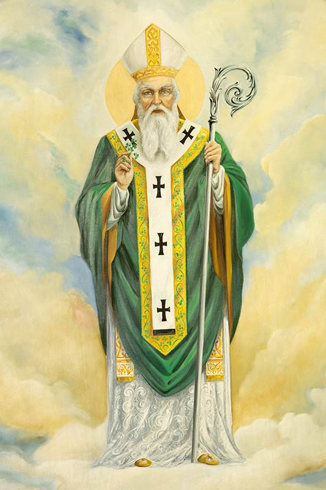

„Hoće li tko za mnom, neka se odreče samoga sebe, neka uzme svoj križ i neka ide za mnom.” (Mt 16,24)

Sveti Patrik, apostol Irske, rođen je oko 385. godine u Britaniji u kršćanskoj obitelji. Iako po krvi nije bio Irac, sudbina mu se neraskidivo povezala s "Zelenim otokom" kada su ga sa 16 godina ugrabili irski gusari i prodali u ropstvo. Tijekom šest godina čuvanja ovaca u irskim brdima, dotadašnji "svjetovni" mladić doživio je duboko vjersko obraćenje. Nakon što je uspio pobjeći natrag u domovinu, u snu je čuo poziv irskog naroda da ih pouči vjeri, što ga je potaknulo da ode u Galiju (današnju Francusku) na teološki studij i pripremu za misije.
Kao posvećeni biskup, Patrik se vratio u Irsku 432. godine, izvrsno poznajući jezik i običaje naroda. Njegova strategija bila je mudra: obraćao se prvo kraljevima i lokalnim vladarima ("tuatha"), čiji bi primjer potom slijedio običan puk. Unatoč čestim progonima poganskih svećenika druida, postigao je golem uspjeh – osnovao je brojne biskupije (sa sjedištem u Armaghu), uveo monaštvo koje će kasnije proslaviti Irsku diljem Europe te odgojio domaći kler. Njegov rad pretvorio je Irsku u "otok svetaca", a on je postao simbolom njezina identiteta.
Umro je 461. godine, ostavivši iza sebe spis Ispovijest u kojem ponizno zahvaljuje Bogu na milosti apostolata. Uz njegov lik vežu se brojne legende, poput one o istjerivanju zmija s otoka ili korištenju djeteline s tri lista kako bi narodu objasnio tajnu Presvetog Trojstva. Iako je bio stranac, svojom je žrtvom i ljubavlju postao najslavljeniji irski svetac čiji se spomen, 17. ožujka, danas obilježava diljem kršćanskog svijeta.